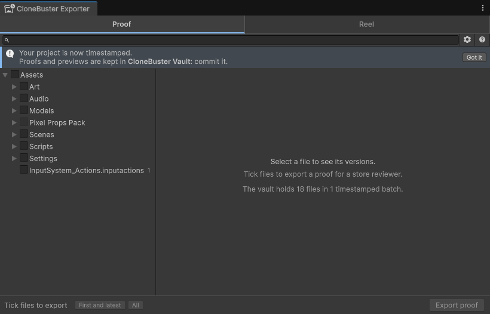

Install CloneBuster
Requirements
CloneBuster has the following requirements:
- Unity 6.0 to 6.6.
- An internet connection while you work, to reach the timestamp services. Versions you save offline are recorded, and are timestamped once the connection returns.
- The
curlcommand, which Windows 10 and later, macOS and most Linux distributions include. CloneBuster uses it to get Bitcoin proofs.
The following tools are optional:
| Tool | Used for |
|---|---|
git | Checking that the original file of an old version can still be found when you export a proof. For more information, refer to Originals come from your own history. |
| Blender | Model previews of .blend files inside Assets, which Unity imports through Blender. Without it, CloneBuster shows the thumbnail Blender saves in the file. |
Install the package
To install CloneBuster, perform the following steps:
- Go to Window > Package Manager.
- Select My Assets, then select CloneBuster: Anti-AI Proof of Creation.
- If the package isn't downloaded yet, select Download.
- Select Import.
- In the Import Unity Package window, select Import.
There is nothing to set up. Recording starts when the import finishes.
What happens on import
When the import finishes, CloneBuster does the following:
- Opens the Exporter, once, with a banner saying the project is now timestamped.
- Takes the first snapshot of your project: it computes a hash, a fingerprint of the exact content, of every file
under
Assets, makes a preview of each image and model, and has the whole snapshot timestamped at once. Unity's status bar shows the progress. - Creates the
CloneBuster Vaultfolder beside yourAssetsfolder, where it keeps the timestamps and the previews.

Commit the vault
The vault lives in CloneBuster Vault, beside Assets. Commit it to your version control
with the rest of the project, so your repository keeps the evidence along with the work. It stays small: a few
kilobytes per batch, and one preview per saved version of an image or a model.
Several teammates can record into the same vault. Each machine writes its own batches, and a version a teammate already recorded isn't recorded again.
CloneBuster Vault/Previews/ and commit the rest. The proofs still verify, but a version whose preview is missing shows no image in a reel or in a PDF.Remove CloneBuster
To remove CloneBuster, delete the Assets/CloneBuster folder. The CloneBuster Vault and
CloneBuster Exports folders and ProjectSettings/CloneBusterSettings.asset stay. Keep the
vault: its proofs still verify without CloneBuster. For more information, refer to
Verify a proof without CloneBuster.
If you install CloneBuster again, it picks up the vault and records what changed while it was removed, with the date of that scan.